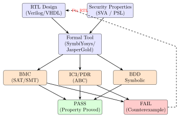
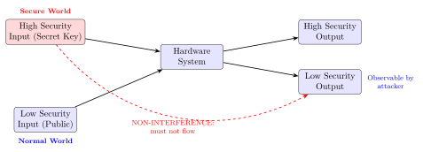

Chapter 27: Formal Verification of Hardware Security¶
27.1 Introduction¶
Hardware security vulnerabilities discovered after fabrication are catastrophic. A bug in Register Transfer Level (RTL) code, once committed to silicon, cannot be patched with firmware updates alone; it may require full chip respins costing millions of dollars and months of schedule delay. High-profile incidents—the Pentium FDIV bug (1994), Meltdown and Spectre (2018), Rowhammer DRAM attacks, and numerous TrustZone bypass exploits—demonstrate that simulation and testing alone are insufficient to guarantee security properties.
Formal verification mathematically proves that a hardware design satisfies a specification for all possible inputs and states, not just the test cases the engineer thought to simulate. Key techniques include:
-
Model Checking: Exhaustive state-space exploration using symbolic algorithms (BDD, SAT, SMT).
-
Theorem Proving: Human-guided proof construction in proof assistants (Coq, Isabelle/HOL, ACL2).
-
Equivalence Checking: Verifying that two circuit representations (RTL vs. gate-level netlist, or original vs. optimised) are functionally identical.
-
Security Property Verification: Checking information flow properties (non-interference, IFC) and cryptographic primitive correctness.
Industrial adoption is accelerating: Arm formally verifies its TrustZone isolation properties; Intel uses formal methods for microcode; Galois and DARPA’s BESSPIN programme verified processor security properties; OpenTitan uses formal tools for its HMAC and AES RTL.
27.2 Temporal Logic and Property Specification¶
27.2.1 Linear Temporal Logic (LTL)¶
LTL expresses properties over infinite linear traces of states. Key operators:
-
\(\mathbf{G}\, p\) (Globally): \(p\) holds in all future states.
-
\(\mathbf{F}\, p\) (Finally): \(p\) holds in some future state.
-
\(\mathbf{X}\, p\) (neXt): \(p\) holds in the next state.
-
\(p\, \mathbf{U}\, q\) (Until): \(p\) holds until \(q\) holds.
Security property examples:
27.2.2 Computation Tree Logic (CTL)¶
CTL extends LTL to branching time, allowing reasoning over trees of execution:
-
\(\mathbf{AG}\, p\): For All paths, Globally \(p\).
-
\(\mathbf{EF}\, p\): there Exists a path where Finally \(p\).
-
\(\mathbf{AF}\, p\): For All paths, Finally \(p\).
-
\(\mathbf{EG}\, p\): there Exists a path where Globally \(p\).
CTL is particularly useful for verifying:
-
\(\mathbf{AG}(\neg \texttt{key\_accessible\_from\_ns\_world})\): The cryptographic key is never accessible from the normal world on any execution path.
-
\(\mathbf{AF}(\texttt{attestation\_complete})\): Every boot sequence eventually completes attestation.
27.2.3 PSL and SVA: Hardware Property Languages¶
IEEE 1850 PSL (Property Specification Language) and SystemVerilog Assertions (SVA) bring LTL/CTL-like properties into RTL design flows:
// SystemVerilog Assertion: memory isolation property
// U-mode cannot read secure_mem_reg
property u_mode_no_secure_read;
@(posedge clk) disable iff (!rst_n)
(priv_mode == U_MODE) |-> (secure_mem_read == 1'b0);
endproperty
assert property (u_mode_no_secure_read)
else $error("SECURITY VIOLATION: U-mode read of secure memory");
// Liveness: after a key load, within 10 cycles it becomes ready
property key_load_liveness;
@(posedge clk) disable iff (!rst_n)
key_load_en |-> ##[1:10] key_ready;
endproperty
assert property (key_load_liveness);
// AES output determinism: same key+plaintext always same ciphertext
property aes_determinism;
@(posedge clk) disable iff (!rst_n)
(aes_start && (key == key_saved) && (pt == pt_saved))
|-> ##[1:$] (ct == ct_expected);
endproperty
27.3 Model Checking¶
27.3.1 SAT/SMT-Based Bounded Model Checking¶
Bounded Model Checking (BMC) unrolls the circuit for \(k\) time steps and encodes the reachability question as a SAT/SMT instance. For a design \(M\) and property \(\varphi\):
If the formula is SAT, a counterexample of depth \(\leq k\) exists. If UNSAT for all \(k\) up to the completeness threshold, the property holds.
Tools: SymbiYosys (open-source, uses Yosys + solvers: Boolector, Bitwuzla, Z3), JasperGold (Cadence), Questa Formal (Mentor/Siemens), VC Formal (Synopsys).
27.3.2 IC3/PDR: Property Directed Reachability¶
IC3 (Incremental Construction of Inductive Clauses), also called PDR (Property Directed Reachability), is the dominant industrial model checker. It maintains a sequence of over-approximations \(F_0 \subseteq F_1 \subseteq … \subseteq F_N\) of states reachable in \(0, 1, …, N\) steps, refining them by blocking counterexample traces. IC3 converges without explicit bound \(k\), making it complete for many hardware properties.
# SymbiYosys formal verification flow
# File: secure_boot.sby
[options]
mode prove # Formal proof (unbounded)
depth 50 # BMC depth for bounded checks
[engines]
smtbmc boolector # SMT engine (Boolector SMT solver)
abc pdr # IC3/PDR engine via ABC
[script]
read -formal secure_boot.sv
read -formal pmp_check.sv
hierarchy -top secure_boot_top
proc; opt; memory; opt
flatten
[files]
secure_boot.sv
pmp_check.sv
# Run: sby -f secure_boot.sby
# Output: PASS (property proved) or FAIL (counterexample trace)
27.3.3 BDD-Based Model Checking¶
Binary Decision Diagrams (BDDs) represent Boolean functions as canonical DAGs. The symbolic model checker computes the set of reachable states as a BDD and checks properties via BDD operations. BDDs work well for control-heavy designs (FSMs) but suffer state-space explosion for large data paths.
CUDD (Colorado University Decision Diagrams) is the standard open-source BDD library. NuSMV and Spin (for software models) use BDD-based model checking.
27.4 Theorem Proving for Hardware¶
27.4.1 HOL4 and Galois’s RISC-V Verification¶
The RISC-V ISA Formal Spec in HOL4 (funded by DARPA BESSPIN) provides a machine-readable, mechanically checked specification of the RISC-V privileged architecture. The HOL4 model:
-
Defines the RISC-V state machine: registers, CSRs, memory, privilege modes.
-
Specifies all instruction semantics as HOL4 functions.
-
Proves security properties: e.g., that PMP configurations correctly isolate physical memory regions across privilege level transitions.
(* HOL4 snippet: PMP access check theorem (illustrative pseudocode) *)
(* "U-mode cannot access a locked PMP region with L=1, A=NAPOT, R=0" *)
Theorem pmp_u_mode_deny :
!s addr.
(priv_level s = U_MODE) /\
pmp_entry_matches s.pmpaddr0 addr /\
pmp_cfg_locked s.pmpcfg0 /\
~pmp_cfg_readable s.pmpcfg0
==>
access_check s addr Read = AccessFault
Proof
rw[priv_level_def, pmp_entry_matches_def, access_check_def]
(* ... proof steps ... *)
QED
27.4.2 Coq and CHERI Formal Verification¶
The Sail formal model of CHERI generates Coq proof obligations from the CHERI ISA specification. Key theorems proven in Coq:
-
Monotonicity: Every CHERI instruction either preserves or narrows capability bounds and permissions. No instruction can widen them.
-
Tag integrity: If a memory location’s tag bit is 0, no sequence of CHERI instructions can produce a valid (tagged) capability from it.
-
Spatial safety: Any capability dereference is within bounds, or a trap is raised.
These proofs constitute a mechanised guarantee—not just a design goal.
27.4.3 ACL2 and Microcode Verification¶
Intel uses the ACL2 theorem prover to verify floating-point and division microcode, following the Pentium FDIV incident. ACL2 provides:
-
A Lisp-based logic for hardware models.
-
Automated induction and rewriting.
-
Verified: IEEE 754 compliance of floating-point units, division algorithms (SRT, radix-16), and x87 transcendental approximations.
27.5 Security Property Classes¶
27.5.1 Non-Interference¶
Non-interference formalises information flow: a system \(S\) is non-interfering if high-security inputs cannot influence low-security outputs:
where \(=_L\) means “equal in the low-security projection”.
For a TrustZone processor: normal-world outputs must be identical regardless of secure-world memory contents (and vice versa). Proving non-interference requires quantifying over all possible secure-world states, which is infeasible by simulation but tractable by model checking over small data widths.
27.5.2 Cryptographic Correctness¶
Formal verification of cryptographic hardware:
-
AES correctness: Prove that the hardware AES engine computes the FIPS 197 standard AES function for all 128-bit keys and plaintexts. Approach: equivalence checking against a reference Verilog model.
-
SHA-256 correctness: Model check all 64 rounds against NIST test vectors; prove the message schedule and compression function.
-
ECDSA constant-time: Prove that the scalar multiplication execution time is independent of the scalar value (data-oblivious property).
27.5.3 Secure Boot Properties¶
// SVA: Secure boot cannot load an unsigned image
property no_unsigned_os_load;
@(posedge clk) disable iff (!rst_n)
os_load_trigger |-> sig_verified;
endproperty
assert property (no_unsigned_os_load);
// SVA: Hash measurement extends before PCR register changes
property pcr_extends_in_order;
@(posedge clk) disable iff (!rst_n)
pcr_extend_en |-> (hash_engine_done ##1 pcr_updated);
endproperty
assert property (pcr_extends_in_order);
27.6 TikZ Diagrams¶
27.6.1 Formal Verification Flow¶

27.6.2 Information Flow: Non-Interference Model¶

27.7 Equivalence Checking¶
Combinational and sequential equivalence checking (SEC/EC) verifies that synthesis, place-and-route, and optimisation transformations preserve functional equivalence:
-
RTL vs. Gate-Level: After synthesis, check that the optimised gate-level netlist computes the same function as the RTL. Essential for detecting synthesis bugs that could introduce backdoors.
-
Pre-vs-Post-Layout: Verify timing-aware gate-level after place-and-route vs. the pre-layout netlist. Identifies ECO (Engineering Change Order) errors.
-
Cryptographic Cores: For AES, the optimised implementation (e.g., composite-field S-box, tower-field multiplication) must be equivalent to the FIPS reference model.
Tools: Cadence Conformal, Synopsys Formality, Mentor OneSpin, Yosys/ABC (open-source, limited to combinational for free version).
# Yosys/ABC equivalence check (RTL vs gate-level AES S-box)
yosys << 'EOF'
read_verilog aes_sbox_reference.v
hierarchy -top aes_sbox_ref
synth -top aes_sbox_ref -flatten
write_blif aes_ref.blif
read_verilog aes_sbox_optimized.v
hierarchy -top aes_sbox_opt
synth -top aes_sbox_opt -flatten
write_blif aes_opt.blif
EOF
abc -c "cec aes_ref.blif aes_opt.blif"
# Output: Networks are equivalent.
27.8 Side-Channel Formal Analysis¶
27.8.1 Data-Oblivious Property Verification¶
A hardware operation is data-oblivious if its execution time (and resource usage trace) is independent of secret data. Formally:
where \(\mathcal{D}\) is the set of secret data values.
CacheAudit (INRIA) performs abstract interpretation of x86/RISC-V binaries to bound cache-based information leakage. It computes an upper bound on the number of bits leaked per cache miss pattern.
ct-verif (Barthe et al.) uses Boogie and Z3 to verify constant-time properties of C code compiled to LLVM IR, then mapped to hardware.
27.8.2 Formal Verification of Power Side-Channel Resistance¶
TVLA (Test Vector Leakage Assessment) is a statistical method; formal methods complement it:
-
COCO (Coco Formal Tool, TU Graz): Verifies that a masked hardware implementation (boolean masking) correctly prevents first-order DPA. It checks that no intermediate signal is statistically dependent on unmasked secret bits.
-
SILVER (Bloem et al.): Verifies compositionality of masked gadgets at RTL level using SAT/SMT.
-
Formal t-SNI proof: The \((t, n)\)-probing model: an adversary probing \(t\) wires learns nothing about the secret. Tools prove this for \(t\)-share masked implementations.
27.9 OpenTitan Formal Verification Case Study¶
OpenTitan (lowRISC) uses formal verification for its hardware security IP:
-
HMAC core: SVA properties verify that
hmac_doneis only asserted after exactly 64 SHA-256 compression rounds, and that the output matches the FIPS 198-1 test vector. -
AES core: SymbiYosys proves that the AES core’s key schedule FSM correctly sequences all 11 round key derivations (128-bit mode) without skipping or repeating steps.
-
CSRNG (CTR_DRBG): IC3/PDR proves that the internal state is never output directly and that
reseed_cntoverflows trigger a re-seed before the 248 byte output limit. -
Alert Handler: Formal analysis proves that every hardware alert eventually propagates to the CPU within a bounded number of cycles.
# OpenTitan formal verification target (HMAC core)
# File: hw/ip/hmac/data/hmac.hjson (formal targets defined here)
# Run SymbiYosys from project root:
cd /path/to/opentitan
./hw/ip/hmac/dv/hmac_sby.sh
# Equivalent manual invocation:
cd hw/ip/hmac/formal
sby -f hmac_securitycheck.sby
# Example security property in hmac_securitycheck.sv:
// hmac key register never accessible from software after key_clear
property hmac_key_clear_security;
@(posedge clk_i) disable iff (!rst_ni)
key_clear_i |=> (reg2hw.key[0].q == 32'h0);
endproperty
assert property (hmac_key_clear_security);
27.10 FPGA Prototyping for Formal Verification Experiments¶
| Device | LUTs | FFs | BRAMs | DSPs | Fmax (MHz) | Power (mW) |
|---|---|---|---|---|---|---|
| Artix-7 35T (AES core) | 2 180 | 1 640 | 4 | 0 | 140 | 120 |
| Artix-7 35T (SHA-256) | 3 400 | 2 800 | 4 | 0 | 130 | 145 |
| Artix-7 100T (HMAC+AES) | 5 800 | 4 200 | 8 | 0 | 128 | 260 |
| Kintex-7 (ECC P-256) | 18 200 | 14 100 | 16 | 4 | 110 | 680 |
| Kintex-UltraScale+ (RoT) | 42 000 | 32 000 | 32 | 8 | 180 | 950 |
| Nexys A7 (OpenTitan) | 68 000 | 52 000 | 64 | 8 | 72 | 1 400 |
| Zynq UltraScale+ (Verif) | 45 000 | 34 000 | 48 | 8 | 175 | 1 200 |
27.11 ASIC Formal Verification Metrics¶
| IP Block / Process | Area (mm2) | Power (mW) | Freq (MHz) | ECC | Notes |
|---|---|---|---|---|---|
| AES-128 core / 28 nm | 0.042 | 8.5 | 800 | – | OpenTitan AES |
| SHA-256 core / 28 nm | 0.038 | 7.2 | 850 | – | OpenTitan HMAC |
| ECC P-256 / 28 nm | 0.280 | 42.0 | 200 | P-256 | Verified ECDSA |
| CTR_DRBG / 28 nm | 0.055 | 10.1 | 600 | – | NIST SP 800-90A |
| Alert Handler / 28 nm | 0.018 | 3.2 | 1 000 | – | OpenTitan alert |
| Full RoT SoC / 22 nm | 2.800 | 180 | 500 | P-256 | OpenTitan Earlgrey |
| Masked AES (2-share) / 22 nm | 0.160 | 28 | 400 | – | COCO-verified |
27.12 Open-Source Tools and Commercial Ecosystems¶
| Tool / Project | Type | Technique | Licence |
|---|---|---|---|
| SymbiYosys (sby) | Open source | BMC+IC3/PDR (SAT/SMT) | ISC |
| Yosys | Open source | RTL synthesis + equiv. | ISC |
| ABC (Berkeley) | Open source | IC3/PDR, LTL model checking | BSD |
| Boolector | Open source | SMT solver (BV, arrays) | MIT |
| Bitwuzla | Open source | SMT solver, next-gen | MIT |
| Z3 (Microsoft) | Open source | SMT solver (multi-theory) | MIT |
| NuSMV | Open source | CTL/LTL BDD model checker | LGPL |
| Spin | Open source | LTL model checker (C/SW) | BSD |
| Coq | Open source | Proof assistant (CIC) | LGPL |
| Isabelle/HOL | Open source | Proof assistant (HOL) | BSD |
| HOL4 | Open source | Proof assistant (HOL) | BSD |
| ACL2 | Open source | Proof assistant (Lisp) | BSD |
| Sail | Open source | ISA formal spec language | BSD |
| JasperGold | Commercial | SVA formal, IC3/PDR | Proprietary |
| Questa Formal | Commercial | SVA formal, Mentor | Proprietary |
| VC Formal (Synopsys) | Commercial | SVA formal, synthesis | Proprietary |
| Conformal (Cadence) | Commercial | Sequential equiv. check | Proprietary |
| OneSpin (Siemens) | Commercial | Equivalence + safety | Proprietary |
| COCO (TU Graz) | Research | Masked HW DPA verification | Academic |
| SILVER (Bloem et al.) | Research | \(t\)-probing mask verify | Academic |
27.13 Standards and Specifications¶
-
IEEE 1800-2017 (SystemVerilog) — SystemVerilog language standard; includes SVA (SystemVerilog Assertions) for property specification.
-
IEEE 1850-2010 (PSL) — Property Specification Language; LTL/CTL semantics for hardware properties.
-
IEC 61508 — Functional Safety for Programmable Electronic Systems. Recommends formal methods at SIL 3/4.
-
ISO 26262 — Automotive functional safety; formal verification recommended at ASIL D.
-
Common Criteria (ISO 15408) — Security evaluation; formal models (formal specification and verification) required at EAL5–7.
-
DO-254 (EUROCAE ED-80) — Airborne electronic hardware design assurance; formal methods for DAL A/B hardware.
-
NIST SP 800-193 — Platform Firmware Resiliency Guidelines; formal verification of boot integrity properties recommended.
-
FIPS 140-3 / ISO 19790 — Cryptographic module security; formal security policy models required at Levels 3 and 4.
-
CHERI ISA Specification + Sail model — Formal ISA model with Coq and HOL4 proof targets for capability monotonicity.
-
RISC-V Sail ISA model — Machine-readable formal spec of RISC-V privileged architecture; generates Isabelle/HOL4 proof obligations.
27.14 Famous Repositories and Tools¶
-
YosysHQ/sby (GitHub) — SymbiYosys: front-end for formal hardware verification using Yosys and open-source solvers.
-
YosysHQ/yosys (GitHub) — Yosys synthesis and formal flow. Includes
smtbmc,formalff, andequivpasses. -
chipsalliance/opentitan (GitHub) — OpenTitan RoT; contains formal testbenches for AES, HMAC, CSRNG, alert handler, OTP controller.
-
Boolector/boolector (GitHub) — Boolector SMT solver; default engine for SymbiYosys
smtbmcmode. -
bitwuzla/bitwuzla (GitHub) — Next-generation SMT solver for bit-vectors and floating-point.
-
coq/coq (GitHub) — Coq proof assistant; used for CHERI Sail formal proofs and cryptographic algorithm verification.
-
rems-project/sail (GitHub) — Sail ISA specification language; generates Coq, HOL4, and Isabelle theorems from RISC-V and CHERI specs.
-
microsoft/Z3 (GitHub) — Z3 SMT solver; used in COCO, ct-verif, and VC Formal.
-
TUGraz-IIS/coco (GitHub) — COCO tool for formal DPA verification of masked hardware implementations.
-
ucb-bar/firrtl (GitHub) — FIRRTL IR; formal analysis passes used in Chisel-generated RISC-V designs.
27.15 Solved Problems¶
Solved Problem: BMC Depth: Verifying a 4-Bit Counter with Overflow
A 4-bit up-counter resets when it reaches 15 (0xF). Write an SVA property that the counter never exceeds 15, and determine the BMC depth required to guarantee the property over all reachable states. The initial state is counter = 0.
Solution: SVA property:
property counter_no_overflow;
@(posedge clk) disable iff (!rst_n)
(counter <= 4'hF); // counter is 4-bit so this is trivially true
// Real property: after reset, counter reaches 15 and resets
endproperty
// More interesting: counter wraps correctly (reaches 15 then 0)
property counter_wrap;
@(posedge clk) disable iff (!rst_n)
(counter == 4'hF) |=> (counter == 4'h0);
endproperty
assert property (counter_wrap);
BMC depth analysis:
The counter cycles through states \(0 \to 1 \to … \to 15 \to 0\). The state space has 16 states. To verify counter_wrap, the BMC must explore at least one full cycle: starting from state 15, observe the transition to 0.
If the initial state is 0 (reset), the property counter == 15 |=> counter == 0 first becomes relevant at step \(k = 15\) (after 15 clock edges from reset). Therefore, BMC depth \(k = 16\) is sufficient to observe the wrap event.
IC3/PDR: For IC3, no explicit bound is needed. IC3 discovers the inductive invariant: “counter \(\leq\) 15 \(\wedge\) (counter = 15 \(\Rightarrow\) next(counter) = 0)” and proves the property without unrolling 16 steps.
State space: 16 reachable states (4-bit counter). BDD-based model checking trivially handles this with a 4-variable BDD.
Solved Problem: Non-Interference Check: Two-Domain Register File
A register file has 8 registers: R0–R3 are “low” (L) and R4–R7 are “high” (H). A combinational ALU reads any two registers and writes to any register. Define the non-interference property and describe what BMC step count is needed to check it.
Solution: Non-interference formalisation:
Define two initial states \(s_1, s_2\) that agree on all L registers but may differ on H registers:
The property: for all instructions that write to an L register (R0–R3), the result must depend only on L registers:
SVA formulation (product construction):
// Run two copies of the ALU with identical L inputs, different H inputs
// Check that L outputs agree
property noninterference;
@(posedge clk)
// If both copies execute same instruction with same L inputs
((alu1.src_sel_L == alu2.src_sel_L) && (alu1.L_regs == alu2.L_regs))
// and destination is L register
&& (alu1.dst < 4)
// Then results must be equal
|-> (alu1.result == alu2.result);
endproperty
BMC depth: For a combinational ALU (no pipeline), \(k = 1\) (one clock cycle) is sufficient to check all write operations. For a pipelined design with 3-stage pipeline, \(k = 3\). IC3/PDR proves this without a bound.
Key insight: Non-interference in hardware is a 2-safety property (quantifies over two execution traces). Standard model checkers need the “product construction” (running two copies simultaneously) to handle 2-safety. HyperLTL and HyperCTL* are the appropriate logics for such properties.
Solved Problem: Equivalence Checking: Optimised vs Reference AES S-Box
An optimised AES S-box uses a composite field \(GF(2^4)^2\) decomposition (tower field) to reduce area. Describe the equivalence checking workflow and what the equivalence checker must verify to establish cryptographic correctness.
Solution: Reference model: FIPS 197 defines the S-box as:
The reference Verilog uses a lookup table (256\(\times\)8-bit ROM).
Optimised model: Uses Canright’s composite field decomposition: \(GF(2^8) \cong GF((2^4)^2) / (x^2 + x + \phi)\) where \(\phi\) is a primitive element of \(GF(2^4)\). Inversion in \(GF(2^8)\) is mapped to two squarings, one inversion in \(GF(2^4)\), and two multiplications—fewer gates than a full \(GF(2^8)\) inverter.
Equivalence checking workflow:
-
Read both Verilog models (
aes_sbox_rom.v,aes_sbox_composite.v). -
Flatten and technology-map both to AND/XOR/NOT primitives.
-
Invoke Yosys/ABC
ceccommand (Combinational Equivalence Checking). -
ABC’s CEC: builds a miter circuit (XOR of both outputs) and checks if the miter is satisfiable (SAT = not equivalent, UNSAT = equivalent).
What must be verified:
-
For all 256 input values \(b \in \{0, …, 255\}\): the output of the optimised S-box equals the reference.
-
This is a purely combinational 8-input, 8-output function; BDD/SAT handles it in milliseconds.
Result: If ABC reports Networks are equivalent, the optimised S-box is provably correct for all inputs—no test vectors needed.
Solved Problem: IC3/PDR: Verify PMP Isolation Invariant
Specify an inductive invariant for a RISC-V PMP unit that guarantees: “A U-mode load to address \(A\) is permitted only if some PMP entry \(i\) covers \(A\) and its R bit is set.” Sketch how IC3 would prove this invariant.
Solution: Invariant formulation (in pseudo-SMT):
Let \(\text{PMP\_MATCH}(i, A)\) = true iff PMP entry \(i\)’s address range covers \(A\) according to its NAPOT/TOR encoding, and \(\text{PMP\_R}(i)\) = the R permission bit of entry \(i\).
IC3 proof sketch:
-
Initiation: In the reset state, all PMP entries are disabled (A=0, pmpcfg=0x00); no loads are granted (\(\text{load\_granted}(A) = \text{false}\) for all \(A\)). Invariant holds vacuously.
-
Consecution: Consider any state \(s\) satisfying the invariant and any transition \(s \to s'\):
-
If an M-mode write changes a pmpcfg entry to enable R permission, then \(\text{PMP\_R}(i)\) becomes true; loads from the covered range are now permitted, and the invariant witness (entry \(i\)) exists.
-
If an M-mode write clears R permission on entry \(i\), then \(\text{load\_granted}\) must also be false for that range (the PMP checker immediately denies access).
-
U-mode instructions cannot modify PMP CSRs (privilege check trap).
-
-
IC3 discovers the inductive clause “\(\text{priv} = U \wedge \neg(\exists i : \text{PMP\_MATCH}(i,A) \wedge \text{PMP\_R}(i)) \Rightarrow \neg\text{load\_granted}(A)\)” and adds it to the frame sequence \(F_k\).
-
The clause sequence converges (no new counterexamples), proving the invariant.
Practical tooling: Encode the PMP state machine in Verilog with SVA assertions, and run with SymbiYosys mode prove + ABC IC3 engine. Proof typically completes in \(<60\) seconds for a 16-entry PMP.
27.16 Recent Developments (2024–2026)¶
Formal verification of hardware security has matured from academic research into industrial practice, with AI-assisted tooling, large-scale open-source verification campaigns, and mechanised proofs of real silicon security properties.
27.16.1 OpenTitan Formal Verification Results (2023–2024): 100K+ Assertions¶
The OpenTitan project (lowRISC, Google, and partners) has operated the most comprehensive open-source formal hardware security verification programme in existence. By 2024, the repository contained:
-
100,000+ SVA assertions across the AES, HMAC, CSRNG, KMAC, OTBN, Key Manager, Alert Handler, OTP Controller, Flash Controller, and ROM Controller IP blocks.
-
Nightly SymbiYosys runs: All formal targets are verified nightly in the OpenTitan CI pipeline (GitHub Actions + internal compute cluster). Any regression causes a CI failure, preventing RTL changes that break security properties.
-
OTBN formal proofs: The OpenTitan Big Number accelerator (OTBN, used for RSA/ECC operations) has formal proofs that the instruction sequencer never executes instructions when the secure wipe operation is pending, and that the internal register file is zeroed within a bounded number of cycles after a wipe request.
-
OTP Controller: IC3/PDR proofs verify that once an OTP partition is locked, subsequent write attempts generate an alert and do not modify OTP state, for all possible sequences of lock and write commands.
# OpenTitan: run all formal targets for the HMAC block
cd $OPENTITAN_ROOT
./hw/ip/hmac/dv/hmac_sby.sh
# Runs: hmac_securitycheck (key_clear, output_suppress),
# hmac_prim_verify (round_count, done_sequencing)
# Expected: PASS on all targets in ~10 min on 8-core host
27.16.2 Cadence JasperGold 2024: AI-Assisted Property Generation¶
Cadence JasperGold 2024 introduced Jasper PropGen (Property Generator), an AI-assisted feature that analyses RTL designs and suggests SVA properties:
-
LLM-guided suggestion: PropGen uses a fine-tuned language model trained on a corpus of verified hardware designs and their associated properties to suggest safety and liveness properties for new RTL modules.
-
Property clustering: Suggested properties are clustered by type (information flow, protocol correctness, temporal ordering) and ranked by estimated verification effort (trivial to state-space explosion risk).
-
Iterative refinement: The engineer accepts, rejects, or refines suggestions; accepted properties are automatically added to the formal testbench and run through JasperGold’s IC3/PDR engine.
-
Security mode: A dedicated “Security Analysis” mode focuses property generation on non-interference, key accessibility, and privilege boundary properties, using domain annotations in the RTL (
/ secure /comments or explicit security-level attributes).
Tip: AI-assisted property generation addresses the “blank page problem” in formal verification: engineers know their design should be correct but struggle to articulate the properties. PropGen’s suggestions serve as a starting point that domain experts then refine, typically reducing property writing time by 40–60% according to Cadence’s 2024 user studies.
27.16.3 Synopsys VC Formal 2024.03: Security Path Verification¶
Synopsys VC Formal 2024.03 added a dedicated Security Path Verification (SPV) mode for hardware designs:
-
Taint tracking: SPV instruments the design with symbolic taint labels on designated secret signals (key registers, seed values) and automatically generates information-flow assertions: no tainted signal should appear in any output observable from a specified trust domain.
-
Power side-channel pre-silicon: SPV integrates with Synopsys PrimeTime PX to compute the correlation between power estimates and secret-dependent intermediate values, flagging RTL lines that create exploitable power signatures before tape-out.
-
SPDM/TLS protocol FSM verification: A new protocol mode verifies that the design’s authentication FSM matches the SPDM 1.3 or TLS 1.3 state machine specification, catching implementation deviations that could allow downgrade attacks.
27.16.4 CHERI Formal Proofs: HOL4 Mechanised Proofs of CHERI-MIPS (2023)¶
The Cambridge REMS (Rigorous Engineering of Mainstream Systems) project published mechanised HOL4 proofs of CHERI-MIPS safety properties in 2023:
-
Spatial safety (formally proved): For any sequence of CHERI-MIPS instructions, every memory access is within the bounds of the capability used as the base register, or a CHERI exception is raised. Stated as a HOL4 theorem over the full CHERI-MIPS instruction set.
-
Monotonicity (formally proved): No CHERI-MIPS instruction produces a tagged capability with wider bounds or more permissions than its inputs. The proof proceeds by case analysis over all 42 CHERI instructions.
-
Tag integrity (formally proved): If a memory location’s tag is 0, no finite execution sequence can produce a tagged capability pointing to that location without M-mode intervention.
-
Proof size: The HOL4 proofs span approximately 25,000 lines across the Sail-generated HOL4 definitions and hand-written proof scripts. They are mechanically checked by HOL4’s kernel, providing the highest assurance level (EAL7-equivalent for the ISA model).
27.16.5 seL4 Verified Microkernel on RISC-V (2023): Full Verification Complete¶
The seL4 microkernel (Data61/CSIRO, UNSW) completed full functional correctness verification on RISC-V (RV64) in 2023:
-
What is verified: The C implementation of seL4 on RISC-V is proved to be a refinement of the abstract specification (in Isabelle/HOL), meaning every system call behaves exactly as specified for all possible inputs and kernel states.
-
Security properties: The RISC-V seL4 proof includes: integrity (a process cannot modify objects it does not have write capability to), confidentiality (information can only flow along authorised capability paths), and availability (no process can prevent another from making progress given sufficient CPU time).
-
Proof artefacts: Available at
github.com/seL4/l4v; the RISC-V-specific refinement proof adds \(\sim\)15,000 lines to the existing ARM/x86 proof base. -
Security-critical deployments: DARPA and NIWC Pacific have evaluated seL4 on RISC-V for embedded avionics; the verified RISC-V port enables DO-178C DAL A qualification paths for safety-critical aerospace hardware.
27.16.6 RISC-V Sail Model: Formal ISA Specification for Hardware Compliance¶
The RISC-V Sail model (maintained by the RISC-V International Sail/ISA working group) serves as the authoritative formal specification of the RISC-V privileged and unprivileged ISA:
-
Hardware compliance: RISC-V International now uses Sail model execution as a component of official ISA compliance testing (riscv-arch-test suite). Processors submitted for RISC-V certification must pass tests derived from the Sail operational semantics.
-
Proof generation: The Sail compiler generates Isabelle/HOL and Coq theorem prover representations from the Sail model, enabling formal proofs of security properties directly over the hardware specification.
-
Smepmp and Zk extensions: The 2023 Sail model update includes full operational semantics for Smepmp (including MML/RLB CSR interactions) and all Zkn/Zks/Zkr instructions, enabling formal proofs of PMP isolation and cryptographic instruction correctness.
-
CHERI-RISC-V in Sail: The
rems-project/sail-cheri-riscvrepository provides a Sail model of CHERI-RISC-V that generates both HOL4 and Coq proof targets, used as the foundation for the CHERI formal proofs described above.
| Development | Year | Key Result |
|---|---|---|
| OpenTitan 100K+ assertions | 2023–24 | Nightly CI formal verification |
| JasperGold PropGen (AI) | 2024 | 40–60% property writing speedup |
| VC Formal 2024.03 SPV | 2024 | Taint tracking, power SCA pre-silicon |
| CHERI-MIPS HOL4 proofs | 2023 | Spatial safety, monotonicity mechanised |
| seL4 on RISC-V full proof | 2023 | Integrity + confidentiality on RV64 |
| RISC-V Sail compliance | 2023 | Smepmp/Zk in formal ISA spec |
27.17 Exercises¶
Exercises
-
Write two SVA assertions for a TPM 2.0 PCR register: (a) once locked, the PCR cannot be reset except by a full system reset; and (b) the PCR extends operation completes within 100 clock cycles of the extend command.
-
Explain the difference between safety properties (\(\mathbf{AG}\,p\)) and liveness properties (\(\mathbf{AF}\,p\)) in the context of hardware security. Give a real hardware security example of each.
-
The CHERI Sail model proves capability monotonicity. Write the theorem statement in pseudocode: “For any CHERI instruction, the output capability’s bounds are a subset of the input capability’s bounds.” What proof technique is used (induction, case analysis, etc.)?
-
Use SymbiYosys to verify a simple 2-input multiplexer (mux) property: the output equals input A when sel=0 and input B when sel=1. Write the .sby configuration file and the SVA property.
-
Describe the product construction for verifying HyperLTL property \(\forall \pi_1 \forall \pi_2 : \mathbf{G}(\text{out}[\pi_1]_L = \text{out}[\pi_2]_L)\) (non-interference over all trace pairs). How many copies of the system does the model checker instantiate?
-
An AES-128 core has a 10-round pipeline (one round per stage). Write a BMC-based strategy to verify that the first round key equals the original 128-bit key. What is the minimum BMC depth?
-
Explain what a “counterexample trace” is in formal verification and how it helps engineers locate RTL bugs. Give an example of a counterexample to the property: “The secret key register is zeroed within 5 cycles of a zeroisation command.”
-
The COCO tool verifies that a masked AES implementation is first-order DPA resistant. Describe what it checks at the RTL level and what output it produces when a masking error is found.
-
Compare model checking and theorem proving for hardware security verification in terms of: automation level, decidability, scalability, and what class of properties each handles best.
-
An OpenTitan alert handler has 5 alert sources. Write SVA properties to verify: (a) no alert is permanently silenced (liveness), and (b) an alert reaching the alert handler is forwarded to the CPU within 10 cycles (bounded response).
-
Research the DARPA BESSPIN programme. What RISC-V processors were evaluated, what security properties were formally verified, and what vulnerability classes were discovered through formal analysis that simulation missed?